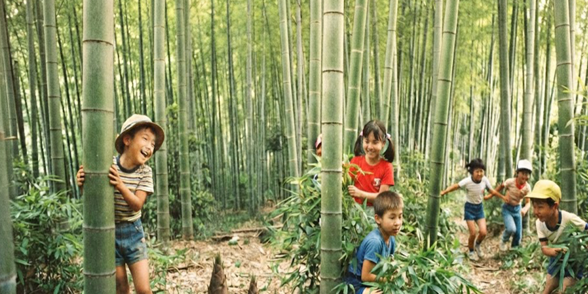

見たい章を選んでください
春の風がまだ少し冷たさを残す季節、県営住宅のすぐ横にある竹薮が、僕ら小一の冒険の始まりだった。
竹薮に一歩踏み込むと、湿った土と、削りたての竹の瑞々しい青い匂いが立ち込める。
そこには、背が高く頼もしい上級生たちの姿があった。僕らにとって彼らは、魔法使いのような存在だった。
鋸や小刀を当たり前のように手にして、手際よく竹を切っていく。
「こうやってやるんだぞ」
そう言って見せてくれる上級生の背中越しに、木漏れ日が揺れていた。
出来上がったばかりの竹鉄砲で濡らした紙玉を飛ばす。
「ポン！」という乾いた音が竹薮に響き、団地の周辺に住む子供たちの歓声が重なる。
学年なんて関係なく、日が暮れるまで僕らは同じ時間を共有していた。
竹藪では遊ぶだけじゃない。タケノコを採ったり、竹を切ったりして、団地の公園や入口まで運ぶ。
そこで上級生たちは、竹でっぽうや竹馬を作って、遊び方ごと僕らに手渡してくれた。
けれど高学年になる頃には、いつの間にかそんな遊びはなくなっていった。
竹薮に足を踏み入れることも減り、あの「作ってもらう」時間は、僕の中で季節みたいに遠ざかっていった。
だからいま、春先の少し冷たい風に触れると、ときどき竹の匂いだけが先に蘇る。
これが私の小学一年生、春の記憶だ
正月は、祖父の家で過ごすのが毎年の楽しみだった。
親戚が集まり、お年玉をもらい、ごちそうを食べる。子どもだった僕にとって、一年で一番賑やかな数日間だ。
そんな正月が終わると、僕は団地へ帰る。
少しだけ寂しい。
けれど、その気持ちは長くは続かなかった。
外へ飛び出せば、近所の友達が待っている。
「コマ持ってきたか！」
その一言で、冬休みの第二幕が始まった。
駄菓子屋で木のコマと鉄芯を買うと、待ちきれずに団地まで走って帰る。
地面にコマを置き、金槌で鉄芯を打ち込む
「カチン、カチン」
冬の澄んだ空気の中に響くその音は、僕らだけの合図だった。
最初は、ただ回すだけで楽しかった。
紐を勢いよく放つと、コマは「ブーン」という低い音を立てながら吸い付くように回り始める。
赤、青、黄色、緑。
一本一本見えていた色の輪が、回転とともに溶け合い、一つの光の輪になる。
ただ回っているだけなのに、いつまでも見ていられた。
けれど学年が上がるにつれ、コマは遊び道具ではなく「武器」へと変わっていく。
相手のコマへ勢いよく叩きつけ、真っ二つに割る。
今では考えられないが、当時はそれが普通の遊びだった。
当然、上級生は強い。
投げ方ひとつ、狙う場所ひとつで勝負が決まる。
せっかく買った新しいコマも、一瞬で割られてしまう。
ガツン！
乾いた音とともに、自慢のコマが真っ二つになる。
悔しい。
でも泣いてなんかいられない。
ポケットから二つ目のコマを取り出し、その場で新しい鉄芯を打ち込む。
やすりを握り、真っ赤にかじかんだ指先で芯を削る。
「シャッ、シャッ……」
次の勝負は、もう始まっている。
ただ尖らせれば強くなるわけではない。
細くしすぎれば、すぐに倒れてしまう。
ほんの少しだけ丸みを残し、それでいて相手に食い込む形を探す。
子どもながらに、本気で「最強の芯」を作ろうとしていた。
それでも負ける。
割られてしまえば、また新しいコマを出す。
でも、この季節には心強い味方がいた。
お年玉という、無敵のアイテムである。
「次こそ勝ってやる」
そう思いながら、また鉄芯を打ち込み、やすりをかける。
ビー玉も、めんこも同じだった。
負ければ全部取られてしまう。
だから勝負はいつも真剣で、下級生ほど財布に厳しい遊びだった。
今では、あんな音を聞くこともなくなった。
金槌の「カチン」という音。
やすりをこする「シャッ、シャッ」という音。
そして、コマ同士がぶつかる「ガツン！」という音。
冬になると、不思議とあの音が耳の奥によみがえる。
あの頃は、寒さなんて気にもしていなかった。
夢中になれるものがあって、悔しくても何度でも挑戦した。
もし、上級生には勝てないからと諦めていたら、この思い出は生まれなかっただろう。
冷たい風に頬を赤くしながら握りしめた木のコマ。
鉄芯の冷たさ
そして、真っ赤にかじかんだ手。
冬の匂いとともに、その記憶は今も鮮やかによみがえる。
これが、僕の小学四年生、冬の記憶だ。